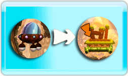

5 |
¿Cómo se juega? |
 |
¡Hay que salvar a estas graciosas criaturas llamadas Furries y llevarlas de vuelta a casa! ¡Ayúdalas a ir desde la nave espacial hasta la salida!


En primer lugar, se puede ver el número de Furries que has dejado. En segundo lugar, el número que quedan por salvar para ganar el nivel.
También puedes hacer sacrificios si has salvado el número de Furries necesarios, ¡o acelerar si tienes prisa!
Mueve el cursor con el mando de Wii y ayuda a los Furries a interactuar con el entorno. Algunos elementos se desplazan directamente manteniendo pulsado el Botón B y moviendo el mando de Wii, otros tendrás que activarlos pulsando el Botón B. ¡Te dejo adivinar cuáles!
Atrapa el coche con el cursor, mantén pulsado el Botón B y mueve el cursor delante y detrás del coche. Si pulsas el Botón B, los Furries saldrán del coche (¡si el coche va rápido, saltarán!). ¡Si el coche va muy lento, volverán a entrar!
¡Recoge monedas para obtener más puntos, y no olvides estar fantástico! Recibirás los logros más raros que puedes ver mirando al Sol...
|
 |
 |